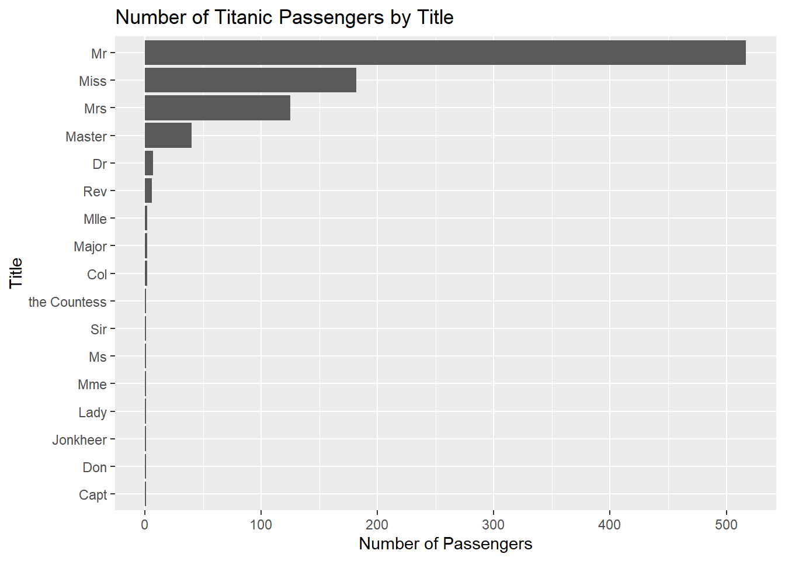

Chapter 5 Strings and Regular Expressions
Character variables are extremely common in real-world datasets. Names, addresses, postal codes, diagnostic codes, survey responses, and file names are all examples of text-based data that often require cleaning before analysis can begin.
This chapter introduces tools for working with strings and regular expressions in R using the tidyverse and the stringr package. You will learn how to separate text variables into multiple columns, remove unnecessary spaces, extract patterns from text, reshape complex datasets, and use regular expressions to identify meaningful information hidden inside character strings. The stringr package simplifies many common string operations in R Wickham (2026b).
In addition to text cleaning, this chapter also introduces important data reshaping techniques using pivot_longer(), which is commonly used to convert messy wide-format datasets into tidy long-format structures suitable for analysis.
5.1 Working with character data in R
The tidyverse includes several useful tools for working with text data. In this chapter, we will primarily use functions from stringr, which provides a consistent and readable framework for string manipulation.
Begin by loading the required libraries.
Throughout this chapter, we will work with two example datasets:
- the Titanic dataset, which will be used to practice cleaning names and extracting passenger titles; and
- the WHO tuberculosis dataset, which will be used to demonstrate reshaping and decoding complex variable names.
5.2 Cleaning and separating character variables
The Titanic dataset contains a variable called Name, which stores multiple pieces of information within a single text field.
We begin by importing the data and converting selected variables into factors.
titanic <- read_csv(
"./Raw Data/titanic.csv",
col_types = cols(
Survived = col_factor(),
Sex = col_factor()
)
)Before working with the names, we perform a small amount of initial cleaning. Records with missing survival information are removed, and a new variable called family_size is created.
titanic <- titanic %>%
filter(!is.na(Survived)) %>%
mutate(
family_size = SibSp + Parch + 1
)
head(titanic)## # A tibble: 6 × 13
## PassengerId Survived Pclass Name Sex Age SibSp Parch
## <dbl> <fct> <dbl> <chr> <fct> <dbl> <dbl> <dbl>
## 1 1 0 3 Braun… male 22 1 0
## 2 2 1 1 Cumin… fema… 38 1 0
## 3 3 1 3 Heikk… fema… 26 0 0
## 4 4 1 1 Futre… fema… 35 1 0
## 5 5 0 3 Allen… male 35 0 0
## 6 6 0 3 Moran… male NA 0 0
## # ℹ 5 more variables: Ticket <chr>, Fare <dbl>,
## # Cabin <chr>, Embarked <chr>, family_size <dbl>The Name variable contains both last names and first names in a single column. To make the data easier to analyze, we can separate this variable into two new columns.
titanic <- titanic %>%
separate(
col = Name,
into = c("Last_name", "First_name"),
sep = ","
)
head(
titanic %>%
select(Last_name, First_name)
)## # A tibble: 6 × 2
## Last_name First_name
## <chr> <chr>
## 1 Braund " Mr. Owen Harris"
## 2 Cumings " Mrs. John Bradley (Florence Briggs Thayer)"
## 3 Heikkinen " Miss. Laina"
## 4 Futrelle " Mrs. Jacques Heath (Lily May Peel)"
## 5 Allen " Mr. William Henry"
## 6 Moran " Mr. James"After separating the names, some records contain extra spaces at the beginning of the First_name variable. These spaces can be removed using str_trim().
titanic <- titanic %>%
mutate(
First_name = str_trim(
First_name,
side = "left"
)
)
head(
titanic %>%
select(Last_name, First_name)
)## # A tibble: 6 × 2
## Last_name First_name
## <chr> <chr>
## 1 Braund Mr. Owen Harris
## 2 Cumings Mrs. John Bradley (Florence Briggs Thayer)
## 3 Heikkinen Miss. Laina
## 4 Futrelle Mrs. Jacques Heath (Lily May Peel)
## 5 Allen Mr. William Henry
## 6 Moran Mr. JamesCleaning whitespace is a small but important part of text processing because extra spaces can interfere with matching, grouping, and filtering operations.
5.3 Extracting patterns with regular expressions
Many text variables contain structured patterns that can be extracted using regular expressions, often called regex.
In the Titanic dataset, passenger titles such as "Mr", "Mrs", "Miss", and "Master" appear within the First_name variable. We can extract these titles using the str_extract() function.
titanic <- titanic %>%
mutate(
Title = str_extract(
First_name,
"^[^.]+"
)
)
head(
titanic %>%
select(First_name, Title)
)## # A tibble: 6 × 2
## First_name Title
## <chr> <chr>
## 1 Mr. Owen Harris Mr
## 2 Mrs. John Bradley (Florence Briggs Thayer) Mrs
## 3 Miss. Laina Miss
## 4 Mrs. Jacques Heath (Lily May Peel) Mrs
## 5 Mr. William Henry Mr
## 6 Mr. James MrThe regular expression ^[^.]+ can be interpreted as follows:
^indicates the beginning of the string;[^.]means any character except a period; and+means one or more occurrences of the previous pattern.
Together, the expression extracts all characters from the beginning of the string until the first period is reached.
Regular expressions can initially appear intimidating, but they become extremely powerful once you begin recognizing common text patterns.
When learning regular expressions, it is often helpful to interpret them one symbol at a time rather than trying to understand the entire pattern at once.
5.4 Creating reusable functions
When the same sequence of operations must be repeated multiple times, it is often useful to place the code inside a function.
The following function trims whitespace and extracts passenger titles.
create_title <- function(firstname) {
firstname %>%
str_trim(side = "left") %>%
str_extract("^[^.]+")
}We can then apply the function directly to the dataset.
titanic <- titanic %>%
mutate(
Title_from_function =
create_title(First_name)
)
head(
titanic %>%
select(
First_name,
Title,
Title_from_function
)
)## # A tibble: 6 × 3
## First_name Title Title_from_function
## <chr> <chr> <chr>
## 1 Mr. Owen Harris Mr Mr
## 2 Mrs. John Bradley (Florence Bri… Mrs Mrs
## 3 Miss. Laina Miss Miss
## 4 Mrs. Jacques Heath (Lily May Pe… Mrs Mrs
## 5 Mr. William Henry Mr Mr
## 6 Mr. James Mr MrCreating functions improves readability and reduces repeated code, especially in large projects.
5.5 Summarizing and visualizing categorical data
Once titles have been extracted, we can summarize the number of passengers within each title group.
## # A tibble: 17 × 2
## Title n
## <chr> <int>
## 1 Mr 517
## 2 Miss 182
## 3 Mrs 125
## 4 Master 40
## 5 Dr 7
## 6 Rev 6
## 7 Col 2
## 8 Major 2
## 9 Mlle 2
## 10 Capt 1
## 11 Don 1
## 12 Jonkheer 1
## 13 Lady 1
## 14 Mme 1
## 15 Ms 1
## 16 Sir 1
## 17 the Countess 1We can also visualize the distribution using ggplot2.
title_summary %>%
ggplot(
aes(
x = reorder(Title, n),
y = n
)
) +
geom_col() +
coord_flip() +
labs(
title = "Number of Titanic Passengers by Title",
x = "Title",
y = "Number of Passengers"
)
Visual summaries are often useful for identifying unusual categories, inconsistencies, or unexpected values within character variables.
5.6 Reshaping complex datasets
The WHO tuberculosis dataset provides an excellent example of why data reshaping is often necessary.
## Rows: 7,240
## Columns: 60
## $ country <chr> "Afghanistan", "Afghanistan", "Afghan…
## $ iso2 <chr> "AF", "AF", "AF", "AF", "AF", "AF", "…
## $ iso3 <chr> "AFG", "AFG", "AFG", "AFG", "AFG", "A…
## $ year <dbl> 1980, 1981, 1982, 1983, 1984, 1985, 1…
## $ new_sp_m014 <dbl> NA, NA, NA, NA, NA, NA, NA, NA, NA, N…
## $ new_sp_m1524 <dbl> NA, NA, NA, NA, NA, NA, NA, NA, NA, N…
## $ new_sp_m2534 <dbl> NA, NA, NA, NA, NA, NA, NA, NA, NA, N…
## $ new_sp_m3544 <dbl> NA, NA, NA, NA, NA, NA, NA, NA, NA, N…
## $ new_sp_m4554 <dbl> NA, NA, NA, NA, NA, NA, NA, NA, NA, N…
## $ new_sp_m5564 <dbl> NA, NA, NA, NA, NA, NA, NA, NA, NA, N…
## $ new_sp_m65 <dbl> NA, NA, NA, NA, NA, NA, NA, NA, NA, N…
## $ new_sp_f014 <dbl> NA, NA, NA, NA, NA, NA, NA, NA, NA, N…
## $ new_sp_f1524 <dbl> NA, NA, NA, NA, NA, NA, NA, NA, NA, N…
## $ new_sp_f2534 <dbl> NA, NA, NA, NA, NA, NA, NA, NA, NA, N…
## $ new_sp_f3544 <dbl> NA, NA, NA, NA, NA, NA, NA, NA, NA, N…
## $ new_sp_f4554 <dbl> NA, NA, NA, NA, NA, NA, NA, NA, NA, N…
## $ new_sp_f5564 <dbl> NA, NA, NA, NA, NA, NA, NA, NA, NA, N…
## $ new_sp_f65 <dbl> NA, NA, NA, NA, NA, NA, NA, NA, NA, N…
## $ new_sn_m014 <dbl> NA, NA, NA, NA, NA, NA, NA, NA, NA, N…
## $ new_sn_m1524 <dbl> NA, NA, NA, NA, NA, NA, NA, NA, NA, N…
## $ new_sn_m2534 <dbl> NA, NA, NA, NA, NA, NA, NA, NA, NA, N…
## $ new_sn_m3544 <dbl> NA, NA, NA, NA, NA, NA, NA, NA, NA, N…
## $ new_sn_m4554 <dbl> NA, NA, NA, NA, NA, NA, NA, NA, NA, N…
## $ new_sn_m5564 <dbl> NA, NA, NA, NA, NA, NA, NA, NA, NA, N…
## $ new_sn_m65 <dbl> NA, NA, NA, NA, NA, NA, NA, NA, NA, N…
## $ new_sn_f014 <dbl> NA, NA, NA, NA, NA, NA, NA, NA, NA, N…
## $ new_sn_f1524 <dbl> NA, NA, NA, NA, NA, NA, NA, NA, NA, N…
## $ new_sn_f2534 <dbl> NA, NA, NA, NA, NA, NA, NA, NA, NA, N…
## $ new_sn_f3544 <dbl> NA, NA, NA, NA, NA, NA, NA, NA, NA, N…
## $ new_sn_f4554 <dbl> NA, NA, NA, NA, NA, NA, NA, NA, NA, N…
## $ new_sn_f5564 <dbl> NA, NA, NA, NA, NA, NA, NA, NA, NA, N…
## $ new_sn_f65 <dbl> NA, NA, NA, NA, NA, NA, NA, NA, NA, N…
## $ new_ep_m014 <dbl> NA, NA, NA, NA, NA, NA, NA, NA, NA, N…
## $ new_ep_m1524 <dbl> NA, NA, NA, NA, NA, NA, NA, NA, NA, N…
## $ new_ep_m2534 <dbl> NA, NA, NA, NA, NA, NA, NA, NA, NA, N…
## $ new_ep_m3544 <dbl> NA, NA, NA, NA, NA, NA, NA, NA, NA, N…
## $ new_ep_m4554 <dbl> NA, NA, NA, NA, NA, NA, NA, NA, NA, N…
## $ new_ep_m5564 <dbl> NA, NA, NA, NA, NA, NA, NA, NA, NA, N…
## $ new_ep_m65 <dbl> NA, NA, NA, NA, NA, NA, NA, NA, NA, N…
## $ new_ep_f014 <dbl> NA, NA, NA, NA, NA, NA, NA, NA, NA, N…
## $ new_ep_f1524 <dbl> NA, NA, NA, NA, NA, NA, NA, NA, NA, N…
## $ new_ep_f2534 <dbl> NA, NA, NA, NA, NA, NA, NA, NA, NA, N…
## $ new_ep_f3544 <dbl> NA, NA, NA, NA, NA, NA, NA, NA, NA, N…
## $ new_ep_f4554 <dbl> NA, NA, NA, NA, NA, NA, NA, NA, NA, N…
## $ new_ep_f5564 <dbl> NA, NA, NA, NA, NA, NA, NA, NA, NA, N…
## $ new_ep_f65 <dbl> NA, NA, NA, NA, NA, NA, NA, NA, NA, N…
## $ newrel_m014 <dbl> NA, NA, NA, NA, NA, NA, NA, NA, NA, N…
## $ newrel_m1524 <dbl> NA, NA, NA, NA, NA, NA, NA, NA, NA, N…
## $ newrel_m2534 <dbl> NA, NA, NA, NA, NA, NA, NA, NA, NA, N…
## $ newrel_m3544 <dbl> NA, NA, NA, NA, NA, NA, NA, NA, NA, N…
## $ newrel_m4554 <dbl> NA, NA, NA, NA, NA, NA, NA, NA, NA, N…
## $ newrel_m5564 <dbl> NA, NA, NA, NA, NA, NA, NA, NA, NA, N…
## $ newrel_m65 <dbl> NA, NA, NA, NA, NA, NA, NA, NA, NA, N…
## $ newrel_f014 <dbl> NA, NA, NA, NA, NA, NA, NA, NA, NA, N…
## $ newrel_f1524 <dbl> NA, NA, NA, NA, NA, NA, NA, NA, NA, N…
## $ newrel_f2534 <dbl> NA, NA, NA, NA, NA, NA, NA, NA, NA, N…
## $ newrel_f3544 <dbl> NA, NA, NA, NA, NA, NA, NA, NA, NA, N…
## $ newrel_f4554 <dbl> NA, NA, NA, NA, NA, NA, NA, NA, NA, N…
## $ newrel_f5564 <dbl> NA, NA, NA, NA, NA, NA, NA, NA, NA, N…
## $ newrel_f65 <dbl> NA, NA, NA, NA, NA, NA, NA, NA, NA, N…Many column names in this dataset are not true variables. Instead, the column names themselves contain several pieces of information.
For example:
new_sp_m014contains:
- the diagnosis type;
- the sex category; and
- the age group.
This structure violates the principles of tidy data because multiple variables are embedded inside the column names.
To clean the dataset, we first reshape it from wide format into long format using pivot_longer().
who1 <- who %>%
pivot_longer(
cols = new_sp_m014:newrel_f65,
names_to = "key",
values_to = "cases",
values_drop_na = TRUE
)
who1## # A tibble: 76,046 × 6
## country iso2 iso3 year key cases
## <chr> <chr> <chr> <dbl> <chr> <dbl>
## 1 Afghanistan AF AFG 1997 new_sp_m014 0
## 2 Afghanistan AF AFG 1997 new_sp_m1524 10
## 3 Afghanistan AF AFG 1997 new_sp_m2534 6
## 4 Afghanistan AF AFG 1997 new_sp_m3544 3
## 5 Afghanistan AF AFG 1997 new_sp_m4554 5
## 6 Afghanistan AF AFG 1997 new_sp_m5564 2
## 7 Afghanistan AF AFG 1997 new_sp_m65 0
## 8 Afghanistan AF AFG 1997 new_sp_f014 5
## 9 Afghanistan AF AFG 1997 new_sp_f1524 38
## 10 Afghanistan AF AFG 1997 new_sp_f2534 36
## # ℹ 76,036 more rowsAfter reshaping the data, we correct inconsistent variable naming.
## # A tibble: 76,046 × 6
## country iso2 iso3 year key cases
## <chr> <chr> <chr> <dbl> <chr> <dbl>
## 1 Afghanistan AF AFG 1997 new_sp_m014 0
## 2 Afghanistan AF AFG 1997 new_sp_m1524 10
## 3 Afghanistan AF AFG 1997 new_sp_m2534 6
## 4 Afghanistan AF AFG 1997 new_sp_m3544 3
## 5 Afghanistan AF AFG 1997 new_sp_m4554 5
## 6 Afghanistan AF AFG 1997 new_sp_m5564 2
## 7 Afghanistan AF AFG 1997 new_sp_m65 0
## 8 Afghanistan AF AFG 1997 new_sp_f014 5
## 9 Afghanistan AF AFG 1997 new_sp_f1524 38
## 10 Afghanistan AF AFG 1997 new_sp_f2534 36
## # ℹ 76,036 more rowsThe combined key variable can then be separated into multiple meaningful variables.
## # A tibble: 76,046 × 8
## country iso2 iso3 year new type sexage cases
## <chr> <chr> <chr> <dbl> <chr> <chr> <chr> <dbl>
## 1 Afghanistan AF AFG 1997 new sp m014 0
## 2 Afghanistan AF AFG 1997 new sp m1524 10
## 3 Afghanistan AF AFG 1997 new sp m2534 6
## 4 Afghanistan AF AFG 1997 new sp m3544 3
## 5 Afghanistan AF AFG 1997 new sp m4554 5
## 6 Afghanistan AF AFG 1997 new sp m5564 2
## 7 Afghanistan AF AFG 1997 new sp m65 0
## 8 Afghanistan AF AFG 1997 new sp f014 5
## 9 Afghanistan AF AFG 1997 new sp f1524 38
## 10 Afghanistan AF AFG 1997 new sp f2534 36
## # ℹ 76,036 more rowsFinally, the sexage variable can be divided into separate sex and age variables.
## # A tibble: 76,046 × 9
## country iso2 iso3 year new type sex age cases
## <chr> <chr> <chr> <dbl> <chr> <chr> <chr> <chr> <dbl>
## 1 Afghanis… AF AFG 1997 new sp m 014 0
## 2 Afghanis… AF AFG 1997 new sp m 1524 10
## 3 Afghanis… AF AFG 1997 new sp m 2534 6
## 4 Afghanis… AF AFG 1997 new sp m 3544 3
## 5 Afghanis… AF AFG 1997 new sp m 4554 5
## 6 Afghanis… AF AFG 1997 new sp m 5564 2
## 7 Afghanis… AF AFG 1997 new sp m 65 0
## 8 Afghanis… AF AFG 1997 new sp f 014 5
## 9 Afghanis… AF AFG 1997 new sp f 1524 38
## 10 Afghanis… AF AFG 1997 new sp f 2534 36
## # ℹ 76,036 more rowsThe entire cleaning workflow can also be written as one continuous pipeline.
who_clean <- who %>%
pivot_longer(
cols = new_sp_m014:newrel_f65,
names_to = "key",
values_to = "cases",
values_drop_na = TRUE
) %>%
mutate(
key = str_replace(
key,
"newrel",
"new_rel"
)
) %>%
separate(
key,
into = c(
"new",
"type",
"sexage"
),
sep = "_"
) %>%
select(
-new,
-iso2,
-iso3
) %>%
separate(
sexage,
into = c("sex", "age"),
sep = 1
)
who_clean## # A tibble: 76,046 × 6
## country year type sex age cases
## <chr> <dbl> <chr> <chr> <chr> <dbl>
## 1 Afghanistan 1997 sp m 014 0
## 2 Afghanistan 1997 sp m 1524 10
## 3 Afghanistan 1997 sp m 2534 6
## 4 Afghanistan 1997 sp m 3544 3
## 5 Afghanistan 1997 sp m 4554 5
## 6 Afghanistan 1997 sp m 5564 2
## 7 Afghanistan 1997 sp m 65 0
## 8 Afghanistan 1997 sp f 014 5
## 9 Afghanistan 1997 sp f 1524 38
## 10 Afghanistan 1997 sp f 2534 36
## # ℹ 76,036 more rows5.7 Using regular expressions inside pivot_longer()
An alternative approach uses regular expressions directly inside pivot_longer() to extract multiple variables at once.
who_longer <- who %>%
pivot_longer(
cols = new_sp_m014:newrel_f65,
names_to = c(
"diagnosis",
"gender",
"age"
),
names_pattern =
"new_?(.*)_(.)(.*)",
values_to = "count",
values_drop_na = TRUE
)
who_longer## # A tibble: 76,046 × 8
## country iso2 iso3 year diagnosis gender age count
## <chr> <chr> <chr> <dbl> <chr> <chr> <chr> <dbl>
## 1 Afghanist… AF AFG 1997 sp m 014 0
## 2 Afghanist… AF AFG 1997 sp m 1524 10
## 3 Afghanist… AF AFG 1997 sp m 2534 6
## 4 Afghanist… AF AFG 1997 sp m 3544 3
## 5 Afghanist… AF AFG 1997 sp m 4554 5
## 6 Afghanist… AF AFG 1997 sp m 5564 2
## 7 Afghanist… AF AFG 1997 sp m 65 0
## 8 Afghanist… AF AFG 1997 sp f 014 5
## 9 Afghanist… AF AFG 1997 sp f 1524 38
## 10 Afghanist… AF AFG 1997 sp f 2534 36
## # ℹ 76,036 more rowsThe regular expression used here contains several capture groups:
(.*)extracts the diagnosis type;(.)extracts one character representing sex; and- the final
(.*)extracts the age group.
These extracted components are automatically assigned to the variables listed in names_to.
This approach demonstrates how regular expressions can be integrated directly into data reshaping workflows.
5.8 Missing values and interpretation
During reshaping, we used the argument:
This removes rows containing missing values.
However, it is important to remember that missing values are not always equivalent to zero values.
An NA typically means that the value is unknown or unavailable, while a value of 0 indicates that the quantity is known and equal to zero.
Understanding the meaning of missing values is an essential part of responsible data analysis.
Never assume that missing values and zeros represent the same thing. Incorrect handling of missing data can substantially alter analytical results.
5.9 Additional practice
The cleaned datasets created in this chapter can now be used for additional exploratory analysis.
Possible exercises include:
- identifying the most common passenger titles in the Titanic dataset;
- creating survival summaries by sex or passenger class;
- summarizing tuberculosis cases by age group or sex; and
- visualizing categorical distributions using bar plots.
These exercises help reinforce the connection between text cleaning, data reshaping, and exploratory analysis.
5.10 Chapter summary
In this chapter, you learned how to work with character variables and regular expressions using the tidyverse and stringr. You cleaned and separated text variables, extracted patterns using regex, created reusable functions, reshaped wide datasets into tidy long-format structures, and interpreted coded variable names.
These techniques are extremely important in real-world data management because many datasets contain poorly structured text variables and encoded information that must be cleaned before analysis can begin.